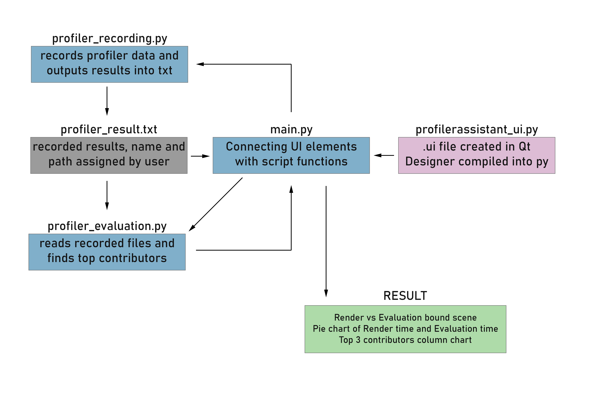
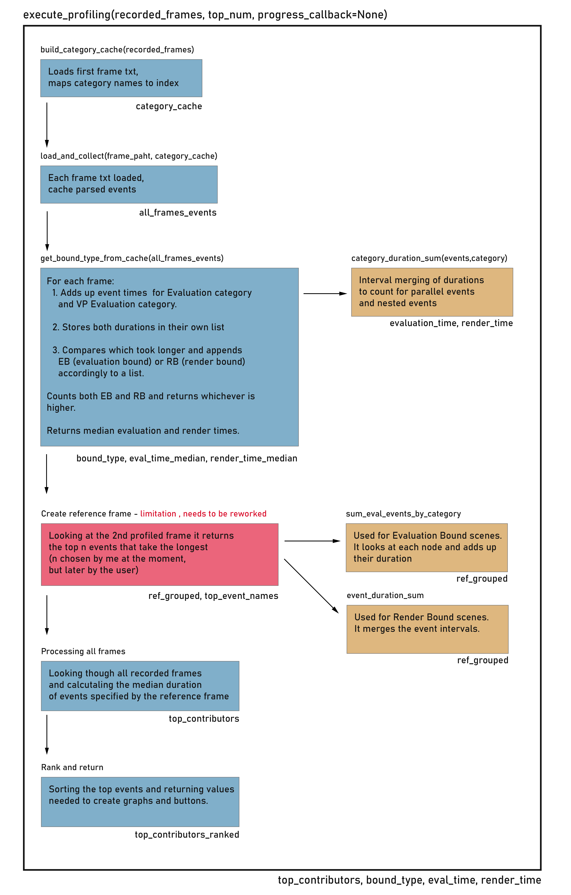

Maya's Profiler provides detailed information about what happens during scene evaluation, but making sense of that information can be difficult without technical knowledge. My goal was to explore a tool that could identify the main performance contributors and present them in a more accessible way, helping artists understand what might be slowing down their scenes.
Project Goal
I approached the Maya Profiler Assistant as a learning project and an opportunity to explore tool development within Maya. I wanted to better understand how Maya's Profiler works, experiment with extracting and interpreting its data, and build a prototype to test whether the idea of making performance analysis more accessible to artists was worth developing further.
Rather than aiming for a finished tool, my goal was to explore the technical challenges involved and establish a foundation that could be expanded in the future.
The tool in use
Module Overview
The Profiler Assistant is divided into four Python scripts, each handling a different part of the process. The diagram below shows how these modules interact and how responsibilities are divided between the interface, profiler recording and data processing.

Processing Logic
The main processing logic is handled by execute_profiling. It takes the recorded frames through several stages, from loading and caching profiler events to identifying the scene's bottleneck type, selecting performance contributors and ranking the results. The diagram below breaks down this process and shows how the different functions contribute to the final output.

Why use a reference frame?
The original idea was to use a reference frame to select a pool of potential performance contributors. I chose the second recorded frame rather than the first because the first frame could contain unusually long events or initialisation spikes that would distort the results.
Initially, I intended to select the top ten events from this reference frame and then track their durations across the other recorded frames. This would limit the amount of data that needed to be processed while still allowing the tool to compare recurring contributors over time.
However, while revising the ranking logic, I lost the original selection pool. The current implementation only selects the top three events from the second frame and uses these as reference contributors. This is a limitation because events that become significant in other frames may never be considered.
Revisiting this selection process would be one of my next steps. I could restore the original pool of ten contributors or investigate removing the reference-frame restriction altogether. Since I already cache some of the extracted data, analysing all relevant events across the recorded frames might be feasible without significantly slowing down the tool.
Render-bound vs Evaluation-bound Scenes
I wanted to distinguish between rendering and evaluation bottlenecks because they require different approaches to identifying performance contributors. In an evaluation-bound scene, I wanted to investigate which objects and nodes were taking the longest to evaluate. In a render-bound scene, the focus would instead be on identifying the main rendering contributors.
This distinction would allow the tool to adapt its analysis to the type of performance problem, rather than presenting the same information regardless of what was slowing the scene down.
What did I learn
Although I did not finish the Profiler Assistant, the development process exposed how much interpretation sits between raw technical data and useful information. Identifying a long-running event is one thing; understanding whether it represents a meaningful performance problem, and explaining that problem in a way an artist can act on, is another.